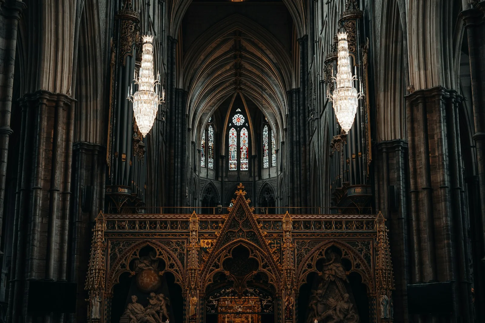
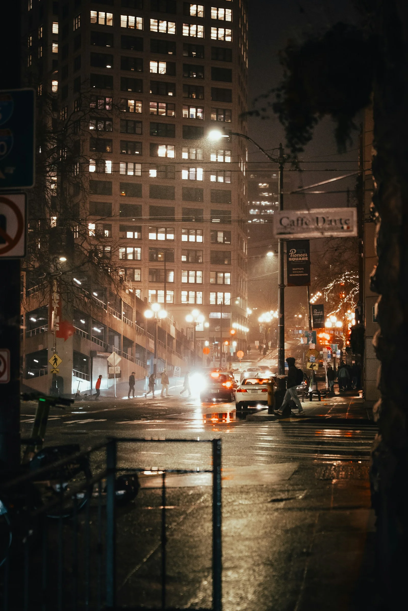
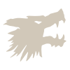
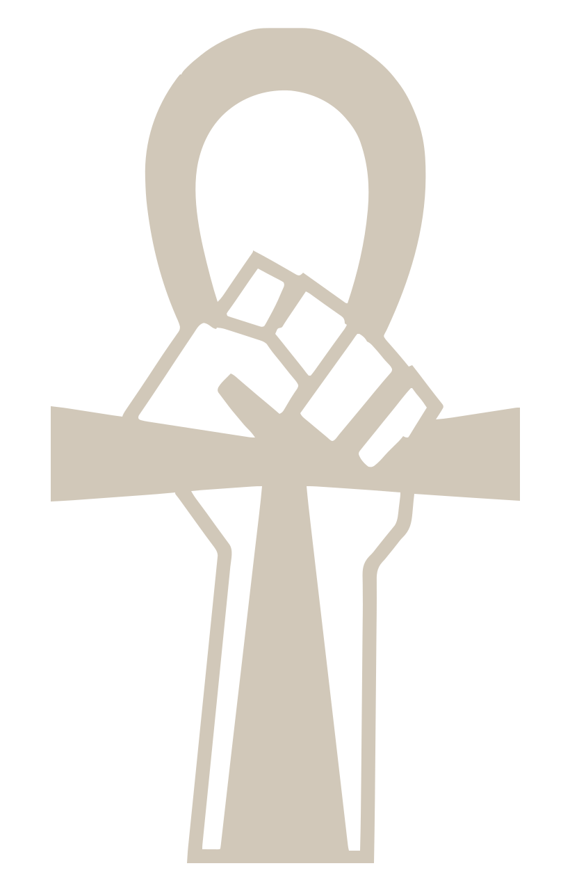
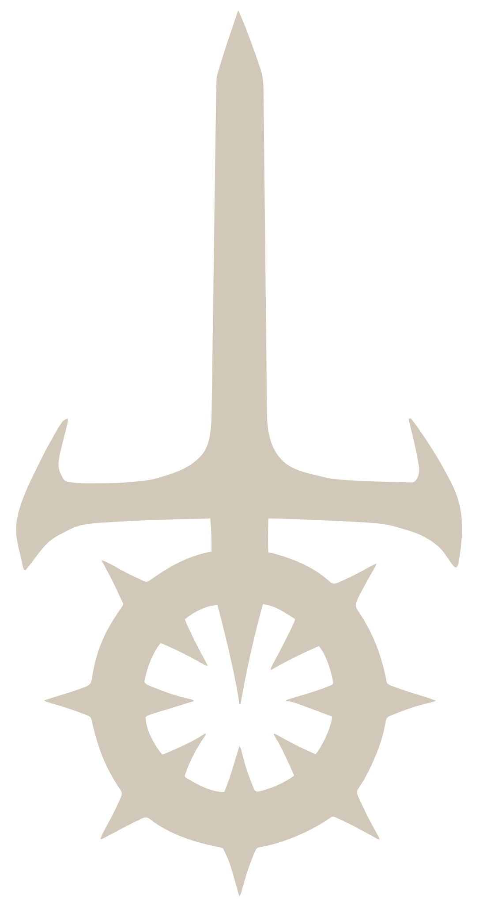

01 За знакомым фасадом
Мир Тьмы
Мир Тьмы похож на наш: работа, пробки, ночные клубы, квартиры с освещёнными окнами. Но за привычной жизнью скрываются существа, для которых человек — добыча, слуга или помеха.
Вампиры живут среди людей. Они влияют на бизнес и политику, охотятся в толпе и стараются не выдавать себя. Их власть велика, но ограничена: город не принадлежит им целиком. Другие сверхъестественные силы тоже существуют, и вампир далеко не всегда понимает, с чем столкнулся.
Вампиры называют друг друга . За этим почти семейным словом скрывается общество хищников. Здесь помощь может обернуться долгом, а улыбка — приглашением в чужую ловушку.

02 Верование, а не доказанная история
Предание о Каине
Согласно распространённому преданию, первым вампиром был библейский Каин. Его проклятие обрекло его на существование вне человеческой жизни и жажду крови. Он передал проклятие потомкам, а те — следующим поколениям. Основателей кланов называют .
Это вера, а не установленная история. Одни Сородичи почитают Каина, другие видят в нём символ своего состояния. Есть и иные учения о происхождении вампиров. Не принимай уверенный рассказ древнего существа за доказательство: возраст не делает свидетелем событий, которых оно не видело.
Что называют поколением?
Поколение — место в цепочке обращений: насколько далеко вампир стоит от предполагаемого первого предка. Это не возраст. Только что обращённый вампир может принадлежать к более раннему поколению, чем тот, кто существует уже столетия.
03 Власть учится прятаться
От древних ночей
к современности
Сородичи рассказывают, что в древности правили рядом с человеческими царями. Их история полна войн за города, кровь и влияние. Потомки восставали против создателей; старшие использовали младших в борьбе друг с другом. Эту долгую цепь интриг называют .
Средневековая инквизиция показала, насколько опасны организованные смертные. Скрывать существование стало условием выживания. Камарилья закрепила этот порядок, а восстания против власти старейшин породили движение анархов и Шабаш.
Со временем замки сменились офисами, а открытое господство — влиянием через деньги и посредников. Но старая привычка распоряжаться чужими жизнями пережила все перемены.

04 Цена продолжения жизни
Что значит
стать вампиром
Обращение называют . Обычный укус не превращает человека в вампира: человека лишают крови, а затем дают ему кровь Сородича, возвращая из смерти. Создатель нового вампира — его .
Тело становится мёртвым. Оно не стареет, не нуждается в дыхании и живёт благодаря крови. Днём вампир обычно спит; солнечный свет и огонь могут уничтожить его. Бессмертие означает отсутствие старости, а не неуязвимость. Убежище становится необходимостью: дневной сон оставляет хищника беззащитным.
— постоянная тяга к крови. Можно питаться, сохраняя жертве жизнь, но голод не исчезает навсегда. Внутри действует : хищный порыв выжить, насытиться, подчинить или убежать. Голод, унижение и страх могут сорвать самообладание.
— связь с людьми, совестью и прежними ценностями. Она не исчезает при обращении. Но каждое оправданное тобой насилие делает следующий шаг легче. Близкие напоминают, кем ты был, и одновременно становятся уязвимыми перед твоим голодом и врагами.
Возраст и положение
, , , , — названия возраста и положения. обозначает родство крови, а не возраст.
Почему кровь другого вампира опасна?
Вампирская кровь может создавать сильную эмоциональную зависимость от того, кому она принадлежит. Эти узы крови превращают благодарность или влечение в подчинение. Предложение напиться может быть способом получить власть над тобой.
05 Тайна, от которой зависит всё
Маскарад
— сокрытие существования вампиров от людей. Нельзя открыто показывать сверхъестественные силы, оставлять очевидные следы охоты или рассчитывать, что признание близкому человеку останется между вами.
Опасен не только свидетель. Камера, переписка и повторяющиеся исчезновения способны привести охотников к убежищу. Один промах может выдать других Сородичей, поэтому нарушение тайны карают жестоко.
Молодой вампир особенно уязвим: у него мало влияния и мало людей, способных скрыть последствия ошибки. Камарилья и анархи спорят о власти, но необходимость Маскарада признают обе стороны.
Улица может забыть твоё лицо. Запись — нет.
06 Родство в крови
Кланы
— линия вампирской крови, которую обычно наследуют от сира вместе со склонностью к определённым силам и особой слабостью. Клан не определяет характер и политическую верность. Основная книга V5 знакомит с семью кланами; это не все линии крови мира.
Бруха
Бунтари и борцы за убеждения. Обладают необычайной силой, скоростью и властью над эмоциями. Их гнев легче вырывается из-под контроля. Среди них встречаются и уличные бойцы, и мыслители, мечтающие переделать общество.
Вентру
Претендуют на роль правителей. Подчиняют волю, внушают почтение и выдерживают тяжёлые удары. Каждый крайне ограничен в выборе подходящей крови. Богатство и связи для них — продолжение власти, а ответственность часто означает право командовать.

Гангрел
Выживальщики, близкие к животному миру. Меняют тело, общаются со зверями и стойко переносят опасности. После приступов ярости временно приобретают животные черты. Многие предпочитают самостоятельность придворным интригам: надёжное укрытие бывает ценнее высокого положения.
Малкавиане
Видят и чувствуют скрытое, умеют прятаться и воздействовать на разум. Их кровь несёт душевное расстройство, способное искажать восприятие. Прозрение может оказаться важным, но отделить его от наваждения непросто даже самому вампиру.
Носферату
Добывают сведения, скрываются от чужих глаз, управляют животными и обладают огромной силой. Становление уродует их внешность. Чужие секреты дают им влияние там, где красота и громкие титулы ничего не решают.
Тореадоры
Тянутся к красоте и человеческим чувствам. Очаровывают, замечают недоступное другим и движутся стремительно. В лишённой красоты обстановке их силы ослабевают. Искусство, желание и восхищение связывают их с людьми, которых они всё равно вынуждены использовать.
Тремеры
Изучают тайное и творят магию крови. Читают скрытое и подчиняют разум. Их изменившаяся кровь больше не связывает других вампиров узами крови. Знания делают их ценными союзниками, но раздробленному клану всё труднее сохранять прежнее единство.
Существуют также — вампиры без клана — и , чья природа отличается от привычной Сородичам. Это разные группы, часто сталкивающиеся с презрением и подозрениями.
Клан и фракция — одно и то же?
Нет. Клан — наследство крови, фракция — политическая или религиозная принадлежность. Вампиры одного клана могут оказаться по разные стороны конфликта. Рядом с названиями приведены символы кланов V5. Их происхождение указано в разделе об изображениях.
07 Три ответа на одну природу
Камарилья,
анархи и Шабаш
Камарилья
Порядок через подчинениеЗащищает Маскарад и власть избранных. Городом обычно правит принц, опирающийся на влиятельных советников и исполнителей. Членство требует принятия: принадлежности к клану недостаточно. Молодому предлагают защиту и положение в обмен на послушание. За услугами следуют долги, а справедливость зависит от власти. Элизиум — место встреч двора, где можно договориться и показать своё положение. Но защита обычаями не делает участников доброжелательными.

Анархи
Свобода от старейшинОтвергают право старших распоряжаться младшими. Единого устройства нет: где-то власть у барона, где-то территории делят группы. Молодому легче найти единомышленников и сохранить связь с человеческой жизнью. Но обещание свободы не исключает насилия, местных властителей и требований верности. Маскарад сохраняет силу. Часто анарх остаётся частью улицы, семьи или работы. Эта близость к людям помогает скрываться, но делает личные связи удобной мишенью.

Шабаш
Война во имя КаинаВоинственная секта, отвергающая человеческие ограничения. Её участники объединяются в стаи и верят в борьбу против древнейших вампиров. Они считают, что наступает Геенна — гибель Сородичей от рук предтеч. Молодой здесь рискует стать оружием чужой веры. Это убеждения секты, а не доказательство истинности пророчества. Преданность стае и священной войне ставится выше прежней жизни. То, что другие Сородичи ещё пытаются сберечь в себе, здесь могут считать слабостью.
08 Перемены пятого издания
Нынешние ночи V5
Смертные охотники стали гораздо опаснее. — название угрозы со стороны тайных операций спецслужб и религиозных охотников. Это не одна всеведущая организация. Они используют наблюдение, данные и вооружённые рейды; обычные люди зачастую не знают истинных целей операций.
Многие старейшины покидают города, подчиняясь таинственному . Для молодых открываются возможности, но исчезают и защитники. Причины Зова окружены слухами; новичку важнее понимать последствия, чем считать себя знатоком древних тайн.
Камарилья ограничивает цифровое общение Сородичей и закрывается от посторонних. Анархи пытаются воспользоваться её потерями. Шабаш оставил многие владения ради войны Геенны, хотя отдельные стаи остаются. Ни одна фракция не гарантирует безопасности.
09 Начало твоей истории
Твоё место в городе
Недавно обращённый знает лишь часть ночной жизни. Ему нужны убежище до рассвета, возможность питаться и понимание того, чью территорию он пересекает. Сир может стать наставником, хозяином или источником неприятностей.
Группа вампиров, связанных общими интересами, называется . Союзники помогают пережить ночь, но доверие ещё предстоит заслужить. Полезно узнать, кто разрешает охоту, кто требует подчинения и чем придётся платить за помощь. Обещание, данное ради спокойной ночи, может связать тебя с чужими планами надолго.
Как устроен именно ваш город и к кому принадлежат персонажи, определит ваша хроника. Пока достаточно помнить: чужая власть опасна, собственный голод опаснее, а прежние ценности придётся защищать поступками.
Ночь принадлежит тебе.
Но ты не единственный, кто так думает.